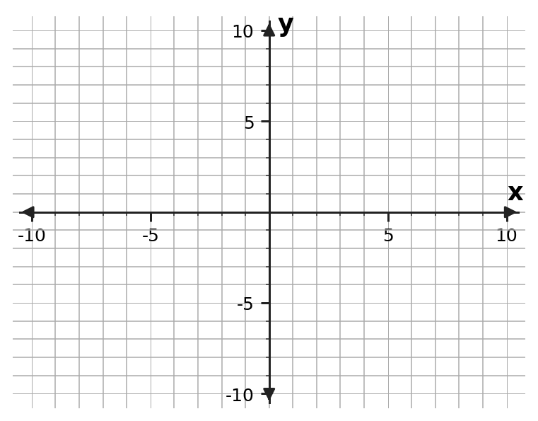
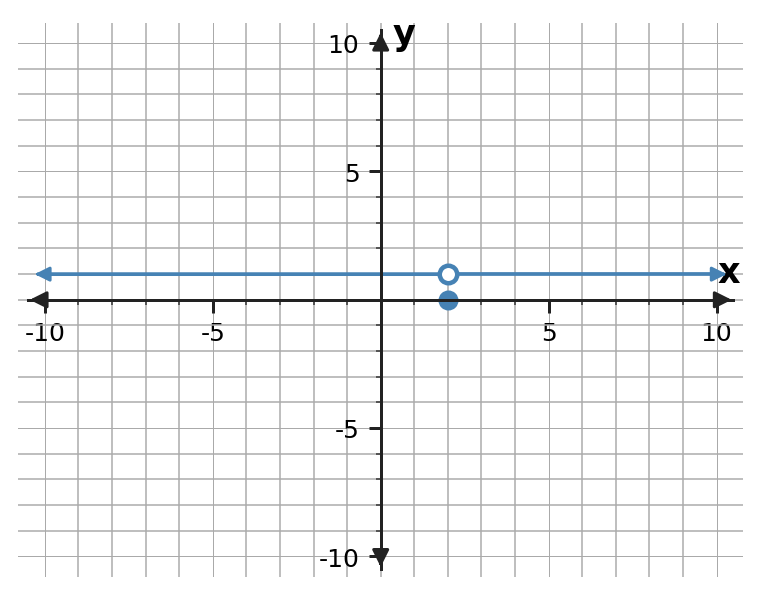
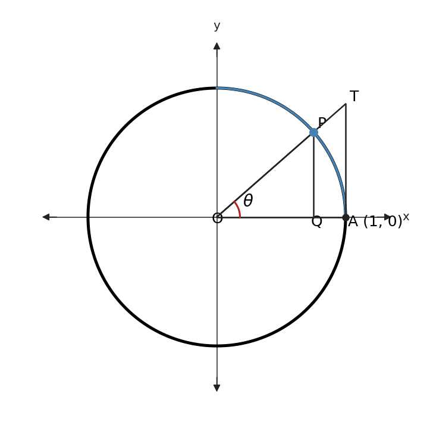

A limit lets nearby behavior reveal the value a function or rate is approaching.
Section Introduction
Getting close can reveal a precise value
Calculus often asks what is happening at an instant even though ordinary arithmetic measures change across an interval. Limits bridge that gap by tracking what a function or rate approaches as the input moves closer to a target.
A limit can be supported numerically with a table, visually with a graph, or algebraically. The function value at the target may agree with the limit, but it does not have to.
This section also develops the situations in which limits fail and the algebraic tools that let us evaluate many limits efficiently.
Read limit notation as an approach statement: the input approaches a target while the output approaches a value.
Vocabulary / Key Notation Preview
limit · one-sided limit · direct substitution · limit properties · does not exist (DNE) · Squeeze Theorem
Sort the vocabulary. Write each vocabulary word in the column that best matches what you know right now. You may move a word later.
| Know for sure | Recognize | Don't know yet |
|---|---|---|
What's To Come
PREVIEW / DECOMPOSE. Use the connected parts to see where this section is headed.
Consider the function $f(x)=\dfrac{x^2-9}{x-3}$ for $x\ne3$.
Part A
What happens if you try to substitute $x=3$ directly into the original expression?
- Answer: The direct substitution gives $0/0$, so the original expression is undefined at $x=3$.
- Reasoning: The zero denominator prevents direct evaluation, but an indeterminate form does not determine the limit.
- Teaching move / listen for: Ask students to distinguish “undefined at the point” from “the limit does not exist.”
Part B
For $x\ne3$, simplify the expression. What does the simplified form suggest about nearby values of $f(x)$?
- Answer: For $x\ne3$, $f(x)=x+3$. Nearby values therefore approach $6$.
- Reasoning: $x^2-9=(x-3)(x+3)$, so the common factor cancels away from the excluded point.
- Teaching move / listen for: Have students state the restriction $x\ne3$ even after simplifying.
Part C
Predict $\displaystyle\lim_{x\to3^-}f(x)$ and $\displaystyle\lim_{x\to3^+}f(x)$. What does that imply about $\displaystyle\lim_{x\to3}f(x)$?
- Answer: $\lim_{x\to3^-}f(x)=6$ and $\lim_{x\to3^+}f(x)=6$, so $\lim_{x\to3}f(x)=6$.
- Reasoning: A two-sided limit exists because the one-sided limits agree.
- Teaching move / listen for: Press for both one-sided statements before accepting the two-sided conclusion.
Part D
Explain why a limit can exist even though the original expression is not defined at the target input.
- Answer: The limit depends on values arbitrarily close to $x=3$, not on the value at $x=3$ itself.
- Reasoning: A removable hole changes the point value/domain but not the nearby trend.
- Teaching move / listen for: This is the core distinction students will use repeatedly in continuity and derivatives.
Example 1 · Average and instantaneous velocity
Wile E. Coyote waits atop a 900-foot cliff for the Road Runner. When he jumps, his rocket pack fails and he falls toward the road below. For an object dropped from an initial height $h_0$, its height after $t$ seconds is modeled by
$$s(t)=-16t^2+h_0.$$For Wile E., $h_0=900$.
- Write Wile E.'s position function.
- Find his average velocity during the first 3 seconds.
- Find his average velocity from $t=2$ to $t=3$ seconds.
- We want Wile E.'s velocity at the instant $t=3$. To investigate that value, find the average velocity over each interval: $[2.5,3]$, $[2.9,3]$, $[2.99,3]$, and $[2.999,3]$.
- What value do these average velocities appear to approach as the starting time moves closer to $t=3$?
- Answer: Position: $s(t)=-16t^2+900$. Average velocity on $[0,3]$ is $-48$ ft/s; on $[2,3]$ it is $-80$ ft/s. On $[2.5,3]$, $[2.9,3]$, $[2.99,3]$, and $[2.999,3]$ the average velocities are $-88$, $-94.4$, $-95.84$, and $-95.984$ ft/s, approaching $-96$ ft/s.
- Reasoning: For a starting time $a<3$, the average velocity to $t=3$ simplifies to $\frac{s(3)-s(a)}{3-a}=-16(a+3)$, which approaches $-96$ as $a\to3$.
- Teaching move / listen for: Keep the negative sign tied to direction: velocity is downward, not “negative speed.”
Example 2 · A limit near a hole
Sketch the graph of
$$f(x)=\frac{x^2-4}{x-2},\qquad x\ne2.$$
- What happens at $x=2$?
- Complete the table to determine what happens as $x$ gets close to 2.
| $x$ | 1.5 | 1.75 | 1.9 | 1.99 | 1.999 | 2 | 2.001 | 2.01 | 2.1 | 2.25 | 2.5 |
|---|---|---|---|---|---|---|---|---|---|---|---|
Use the graph and table to find $\displaystyle\lim_{x\to2}f(x)$.
- Answer: For $x\ne2$, $f(x)=x+2$. The graph is the line $y=x+2$ with a hole at $(2,4)$. The table values are $x+2$, and $\lim_{x\to2}f(x)=4$.
- Reasoning: Factoring $x^2-4=(x-2)(x+2)$ reveals the nearby linear behavior while preserving the excluded input.
- Teaching move / listen for: Use the graph and table together so students see that the hole does not control the limit.
Assume $f$ is defined in a neighborhood of $c$ and let $c$ and $L$ be real numbers. The function $f$ has limit $L$ as $x$ approaches $c$ if, given any positive number $\varepsilon$, there is a positive number $\delta$ such that for all $x$,
We write
Example 3 · The limit can exist even when the function value is different
Use the graph to find $\displaystyle\lim_{x\to2}g(x)$, where
$$g(x)=\begin{cases}1,&x\ne2\\0,&x=2.\end{cases}$$
- Answer: $\lim_{x\to2}g(x)=1$, even though $g(2)=0$.
- Reasoning: Every nearby value is $1$; only the single assigned point differs.
- Teaching move / listen for: Ask which feature controls the limit: the approaching curve or the filled point.
Example 4 · Three ways a limit can fail
Investigate the existence of each limit using a graph and/or table.
a. $\displaystyle\lim_{x\to0}\frac{|x|}{x}$
| $x$ | -0.5 | -0.25 | -0.1 | -0.01 | -0.001 | 0 | 0.001 | 0.01 | 0.1 | 0.25 | 0.5 |
|---|---|---|---|---|---|---|---|---|---|---|---|
b. $\displaystyle\lim_{x\to1}\frac{1}{(x-1)^2}$
| $x$ | 0 | 0.5 | 0.9 | 0.99 | 0.999 | 1 | 1.001 | 1.01 | 1.1 | 1.5 | 2 |
|---|---|---|---|---|---|---|---|---|---|---|---|
c. $\displaystyle\lim_{x\to0}\sin\!\left(\frac1x\right)$
First convince yourself that the listed $x$-values get closer and closer to 0 as you move to the right.
| $x$ | $\frac2\pi$ | $\frac2{3\pi}$ | $\frac2{5\pi}$ | $\frac2{7\pi}$ | $\frac2{9\pi}$ | $\frac2{11\pi}$ | $\frac2{13\pi}$ | $x\to0$ |
|---|---|---|---|---|---|---|---|---|
- Answer: a. DNE because the left-hand limit is $-1$ and the right-hand limit is $1$. b. The function grows without bound to $+\infty$ from both sides; there is no finite real limit. c. DNE because $\sin(1/x)$ oscillates between values such as $1$ and $-1$ arbitrarily close to $0$.
- Reasoning: The three failures are different: unequal one-sided limits, unbounded behavior, and oscillation.
- Teaching move / listen for: Have students name the failure mechanism, not just write DNE.
If $L$, $M$, $c$, and $k$ are real numbers and
then:
- Sum Rule: $\displaystyle \lim_{x\to c}[f(x)+g(x)]=L+M$
- Difference Rule: $\displaystyle \lim_{x\to c}[f(x)-g(x)]=L-M$
- Product Rule: $\displaystyle \lim_{x\to c}[f(x)g(x)]=LM$
- Constant Multiple Rule: $\displaystyle \lim_{x\to c}[k f(x)]=kL$
- Quotient Rule: $\displaystyle \lim_{x\to c}\frac{f(x)}{g(x)}=\frac{L}{M}$, provided $M\ne0$
- Power Rule: If $r$ and $s$ are integers with $s\ne0$, then $\displaystyle \lim_{x\to c}[f(x)]^{r/s}=L^{r/s}$, provided $L^{r/s}$ is a real number.
Example 5 · Properties of limits
Given $\displaystyle\lim_{x\to c}f(x)=2$ and $\displaystyle\lim_{x\to c}g(x)=3$, evaluate:
- $\displaystyle\lim_{x\to c}[5g(x)]$
- $\displaystyle\lim_{x\to c}[f(x)+g(x)]$
- $\displaystyle\lim_{x\to c}[f(x)g(x)]$
- $\displaystyle\lim_{x\to c}\frac{f(x)}{g(x)}$
- Answer: The limits are $15$, $5$, $6$, and $\frac23$, respectively.
- Reasoning: Apply the constant multiple, sum, product, and quotient rules to the given limits $2$ and $3$.
- Teaching move / listen for: Ask students to name the rule before computing each value.
- If $p(x)$ is any polynomial function and $c$ is any real number, then
$$\lim_{x\to c}p(x)=p(c).$$
- If $p(x)$ and $q(x)$ are polynomials, then
$$\lim_{x\to c}\frac{p(x)}{q(x)}=\frac{p(c)}{q(c)},$$provided $q(c)\ne0$.
Example 6 · Direct substitution
Find each limit.
- $\displaystyle\lim_{x\to1}(-x^2+1)$
- $\displaystyle\lim_{x\to3}\frac{\sqrt{x+1}}{x-4}$
- $\displaystyle\lim_{h\to0}(3h^2+2h)$
- $\displaystyle\lim_{h\to0}(3x^2-2xh+5h)$
- Answer: The limits are $0$, $-2$, $0$, and $3x^2$, respectively.
- Reasoning: Each expression is continuous in the variable approaching its target, so direct substitution works; in the final item, $x$ is treated as a constant while $h\to0$.
- Teaching move / listen for: The final item is a good check that students track which variable is actually approaching a value.
Example 7 · Other strategies for finding limits
Find each limit, if it exists.
- $\displaystyle\lim_{x\to-1}\frac{2x^2-x-3}{x+1}$
- $\displaystyle\lim_{x\to3}\frac{\sqrt{x+1}-2}{x-3}$
- $\displaystyle\lim_{x\to0}\frac{\frac1{x+4}-\frac14}{x}$
- Answer: The limits are $-5$, $\frac14$, and $-\frac1{16}$.
- Reasoning: Factor and cancel in the first, rationalize in the second, and combine the complex fraction before canceling in the third.
- Teaching move / listen for: Use this set to reinforce procedure selection: the indeterminate form signals that algebraic manipulation is needed.
A function $f(x)$ has a limit as $x$ approaches $c$ if and only if the right-hand and left-hand limits at $c$ exist and are equal. In symbols,
Example 8 · One-sided limits
Let
$$f(x)=\begin{cases}5-2x,&x>2\\3x+1,&x\le2.\end{cases}$$- Graph $f(x)$.
- Find $\displaystyle\lim_{x\to2^+}f(x)$.
- Find $\displaystyle\lim_{x\to2^-}f(x)$.
- What can you say about $\displaystyle\lim_{x\to2}f(x)$?
- Answer: $\lim_{x\to2^+}f(x)=1$ and $\lim_{x\to2^-}f(x)=7$, so $\lim_{x\to2}f(x)$ does not exist.
- Reasoning: The right-hand piece gives $5-2(2)=1$ while the left-hand piece gives $3(2)+1=7$.
- Teaching move / listen for: Require students to read the domain conditions before choosing which formula to use.
Example 9 · Investigating the fundamental trigonometric limit
Investigate
$$\lim_{x\to0}\frac{\sin x}{x}$$by sketching a graph and making a table.
| $x$ | |||||||
|---|---|---|---|---|---|---|---|
| $f(x)$ |
- Answer: $\displaystyle\lim_{x\to0}\frac{\sin x}{x}=1$.
- Reasoning: Graphical and numerical evidence from both sides approaches $1$ when angles are measured in radians.
- Teaching move / listen for: Explicitly check radian mode; the fundamental trigonometric limit is a radian result.
Example 10 · Using the limit of sine over its angle
Evaluate each limit, showing all work where appropriate.
- $\displaystyle\lim_{\theta\to0}\frac{\sin\theta}{\theta}$
- $\displaystyle\lim_{x\to0}\frac{\sin(5x)}{4x}$
- $\displaystyle\lim_{x\to0}\frac{\sin x}{5x^2+x}$
- Answer: The limits are $1$, $\frac54$, and $1$, respectively.
- Reasoning: Rewrite each expression to expose $\frac{\sin u}{u}\to1$: $\frac{\sin5x}{4x}=\frac54\frac{\sin5x}{5x}$ and $\frac{\sin x}{5x^2+x}=\frac{\sin x/x}{5x+1}$.
- Teaching move / listen for: Listen for students who substitute $0$ before restructuring the expression.
If $g(x)\le f(x)\le h(x)$ for all $x\ne c$ in some interval about $c$, and
then
Example 11 · Proving the sine limit with the Squeeze Theorem
Use the unit-circle figure to prove
$$\lim_{\theta\to0}\frac{\sin\theta}{\theta}=1.$$First consider the right-hand limit and restrict $\theta$ so that $0<\theta<\frac{\pi}{2}$.

- Find the area of $\triangle OAP$.
- Find the area of sector $OAP$.
- Find the area of $\triangle OAT$.
- Set up an inequality using the three areas from parts a–c.
- Divide all three parts by $\frac12\sin\theta$. Why do the inequality signs stay the same?
- Rewrite the middle term so that it contains $\frac{\sin\theta}{\theta}$.
- Use the Squeeze Theorem to show $\displaystyle\lim_{\theta\to0^+}\frac{\sin\theta}{\theta}=1$.
- Show that $f(\theta)=\frac{\sin\theta}{\theta}$ is an even function.
- Use evenness to conclude what happens to $\displaystyle\lim_{\theta\to0^-}\frac{\sin\theta}{\theta}$.
- Explain why $\displaystyle\lim_{\theta\to0}\frac{\sin\theta}{\theta}=1$.
- Answer: For $0<\theta<\frac\pi2$: area $\triangle OAP=\frac12\sin\theta$, sector $OAP=\frac12\theta$, and area $\triangle OAT=\frac12\tan\theta$. Thus $\frac12\sin\theta<\frac12\theta<\frac12\tan\theta$. Dividing by the positive quantity $\frac12\sin\theta$ gives $1<\frac\theta{\sin\theta}<\frac1{\cos\theta}$; taking reciprocals yields $\cos\theta<\frac{\sin\theta}{\theta}<1$. Both outside expressions approach $1$, so the right-hand limit is $1$. Also $\frac{\sin(-\theta)}{-\theta}=\frac{\sin\theta}{\theta}$, so the function is even and the left-hand limit is also $1$. Therefore the two-sided limit is $1$.
- Reasoning: The geometric area inequality creates the squeeze; positivity justifies division and reciprocal inequality handling.
- Teaching move / listen for: Slow down at the inequality transformations. Students often reverse an inequality incorrectly or forget why all quantities are positive.
AP Alignment Summary
Important numbering note: This textbook's Section 2.1 numbering is independent of the College Board AP unit/topic numbering.
| AP Topic | College Board Topic | How this section covers it |
|---|---|---|
| 1.1 | Introducing Calculus: Can Change Occur at an Instant? | Wile E. velocity example moves from average rates over intervals to an instantaneous rate. |
| 1.2 | Defining Limits and Using Limit Notation | Hole examples, formal limit definition, one-sided notation, and explicit separation of limit from point value. |
| 1.3–1.4 | Estimating Limit Values from Graphs / Tables | Graphs and tables are used together to estimate limits and diagnose nonexistence. |
| 1.5 | Determining Limits Using Algebraic Properties of Limits | Limit laws are stated and applied to combinations of functions. |
| 1.6–1.7 | Algebraic Manipulation / Selecting Procedures | Factoring, rationalizing, complex fractions, and strategy selection for indeterminate forms. |
| 1.8 | Determining Limits Using the Squeeze Theorem | The sine-over-angle limit is proved geometrically with the Squeeze Theorem. |
| 1.9 | Connecting Multiple Representations of Limits | Numerical, graphical, verbal, and analytical representations are deliberately connected throughout. |
This section carries the opening half of College Board AP Unit 1, with especially strong emphasis on Mathematical Practices 1 (procedures), 2 (representations), 3 (justification), and 4 (notation).
Alignment reference: AP Calculus AB — AP Central and the AP Calculus AB and BC Course and Exam Description. College Board notes that the 2026–27 update contains clarifications but does not change course content.